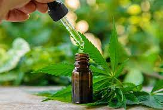
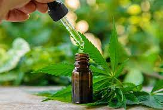
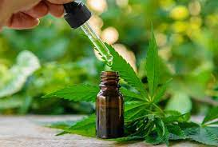
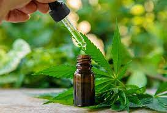

Cannabis Medicinal
Si bien se usan indistintamente significan lo mismo. El uso terapéutico muchas veces ocurre en ausencia de los criterios que dan al cannabis la calidad medicinal. Se llama Cannabis de Grado Médico que tiene con control de calidad, cuya producción esta estandarizada y que cumple con las normas internacionales para medicamentos herbales. El uso medicinal del cannabis se refiere sobre todo al fin que le damos y no a su calidad.
Los usos potencialmente beneficiosos pueden verse en muchas enfermedades, debido a que casi todos los órganos y sistemas tienen sitios para que pueda ejercer su efecto por la acción de los principios activos de la planta (cannabinoides). Conociendo los efectos beneficiosos del cannabis y los cannabinoides sobre la salud, se comprende el uso medicinal: